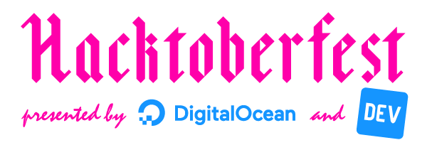

 
Hacktoberfest jest corocznym wydarzeniem biorcym miejsce na platformie GitHub, kt贸rego zao偶eniem jest zachcanie developer贸w do brania udziau w projektach Open Source.
Jako kilku goci zafascynowanych Open Source, postanowilimy zorganizowa meetup zwizany z tym wydarzeniem w Poznaniu.
Nie wa偶ne, czy to to tw贸j pierwszy krok w Open Source, czy te偶 utrzymujesz du偶y projekt ju偶 od kilku lat - docz do nas i kod藕my razem w ramach Hacktoberfest.
Wydarzenie skada si z dw贸ch g贸wnych cie偶ek. Mo偶esz wzia udzia tylko w jednej, lub obydwu - jak wolisz!
Miejsce, gdzie mo偶na rozsi si z laptopem i troch pokodzi. Poznaj nowych ludzi, popytaj o pomoc, pom贸偶 innym, porozmawiaj o ciekawych projektach, podziel si wiedz, docz do spoecznoci! (Albo i nie. Jak wolisz - po prostu baw si dobrze!)
Wystpienia nt. Wolnego Oprogramowania, Open Source, programowania, oraz innych rzeczy zwizanych z bran偶 IT.
Nie musisz przynosi ze sob nic ponad laptopa - zapewniamy napoje oraz przekski!
Szukamy os贸b chtnych do wygoszenia prelekcji podczas wydarzenia! Je偶eli:
masz w gowie temat zwizany z Wolnym Oprogramowaniem / Open Source, albo wytwarzaniem oprogramowania og贸em
chcesz podzieli si wiedz z innymi
chcesz si publicznie pokaza
nie zwlekaj i napisz do nas na adres team@hacktoberfest.pl!
Jestemy otwarci na wszystkie propozycje, niezale偶nie od skomplikowania tematu czy waszego dowiadczenia. Nawet, jeli mylisz, 偶e tw贸j pomys jest "za bardzo dla pocztkujcych", albo nigdy wczeniej nie bye/a prelegentem - prosimy, napisz do nas. Chcemy, aby wydarzenie byo przyjazne osobom rozpoczynajcym swoj przygod z IT, wic prelekcje dla pocztkujcych s mile widziane. Zrobimy, co mo偶emy, aby pom贸c ci si przygotowa.
Ka偶da prelekcja powinna zaj od 5 do 45 minut. Na zgoszenia czekamy do koca wrzenia.
Je偶eli zajmujesz si utrzymaniem jakiego projektu Open Source, mo偶esz doczy do naszego wydarzenia jako Maintainer.
Napisz do nas na: team@hacktoberfest.pl lub Facebook messenger.
Udzia w wydarzeniu jest darmowy. Z powod贸w organizacyjnych prosimy jednak o zarejestrowanie si na meetup za porednictwem Eventbrite.
Pozwoli nam to oszacowa liczb uczestnik贸w oraz odpowiednio wyposa偶y pomieszczenia.

Sonalake Sp. z o.o.
Plac Andersa 5
61-894 Pozna
Google Maps